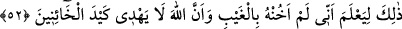

Erbâb-ı te’vilden biri şöyle demiştir: Nefsin kuvvelerine işâret olan kadınların
“Hâşâ, Allah için” demeleri ve nefs-i emmâre demek olan azizin karısının “Şimdi
gerçek ortaya çıktı.” demesi, nefis ile kuvvelerin Hakk’ın nuruyla pürnûr olduğuna,
doğruluk ve insaf sıfatlarıyla muttasıf bulunduğuna işâret ediyor.
Bütün bu güzel sıfatların meydana gelmesi ise yedi yahut on iki ismin halvet
zindanında tamamlanmasına bağlıdır. Çünkü bu halvet ve kemâl sayesinde kalb, vahdet
(birlik) nûruna vâsıl olur. Nefis için tezkiye ve itmî’nân hâsıl olur. Kalbin üstünlüğünü,
doğruluğunu ve suçsuzluğunu ikrar eder. Çünkü nefsin emmâre iken bile günahını îtiraf
etmesi ve aşırıya kaçtığı hususlarda bağışlanmayı dilemesi, itmînânın kemâlinden ileri
gelir. Davranış ve amellerdeki doğruluk (sıdk), onların her tür gaye ve maksaddan uzak
olarak Allah’ın rızâsına uygun olmasıdır. Hallerdeki doğruluk (sıdk) ise hallerin nefsânî
sıfatlardan uzak ve Allah’ın rızâsına uygun olması demektir.”
52. (Yûsuf dedi ki): “Bu, azizin yokluğunda ona hâinlik etmediğimi ve Allah’ın
hâinlerin hîlesini başarıya ulaştırmayacağını (herkesin) bilmesi içindir.”
Yûsuf dedi ki: “Bu,” yani suçsuz olduğumun ortaya çıkmasını istemem ya da
suçsuzluğumun ortaya çıkması için gösterdiğim bunca gayret.
Kâşifî şöyle der: “Kral: “Kadınlar günahlarını îtiraf etti. Gel de senin huzûrunda
onları cezâlandırayım.” diye haber gönderdi.” Yûsuf (a.s.) buyurdu ki: “Benim
maksadım kimsenin cezâlandırılması değildir. Ben bunu şunun için yaptım ki “azizin”
haremi konusunda “yokluğunda ona hâinlik etmediğimi” -çünkü karşı gelmek, hainlik
etmek demektir- “ve Allah’ın hâinlerin hîlesini başarıya ulaştıramayacağını” yerine
yetirmeyeceğini, neticeye erdirmeyeceğini, aksine iptal ve yok edeceğini “bilmesi
içindir.” Nitekim, kendi karısının tuzağını neticeye erdirmemiş ve sonunda karısı eşinin
kendisine karşı hissettiği güven duygusuna hıyânet ettiğini ikrâr etmiştir.
“Yokluğunda ona hâinlik etmediğimi” cümlesinden maksad, ben onun gıyabında iken
ona hâinlik etmedim veya o benim gıyâbımda iken arkasından hâinlik etmedim, demek
olabilir.
Âyette hâinin fiili “hile” diye isimlendirilmiştir. Çünkü hâin yaptığını hîlelere
başvurup kafaları karıştırarak yapar. Buna göre âyetteki “hilesini başarıya
ulaştırmayacağını” ifâdesi, tamamına erdirmez, maksadına ulaştırmaz demektir.
Bu sözüyle Yûsuf azizin karısına, kocasının emanetine hâinlik ettiği târizinde
bulunuyor. Azize de kendisinin nezih ve suçsuz olduğunu gösteren delilleri gördükten
sonra karısının kendisini hapsettirmesine izin vererek Allah’ın emanetine hâinlik ettiği
târizinde bulunmuş oluyor.
Bu ifadenin, kendisinin güvenilirliğini pekiştirmek ve hâin biri olması durumunda